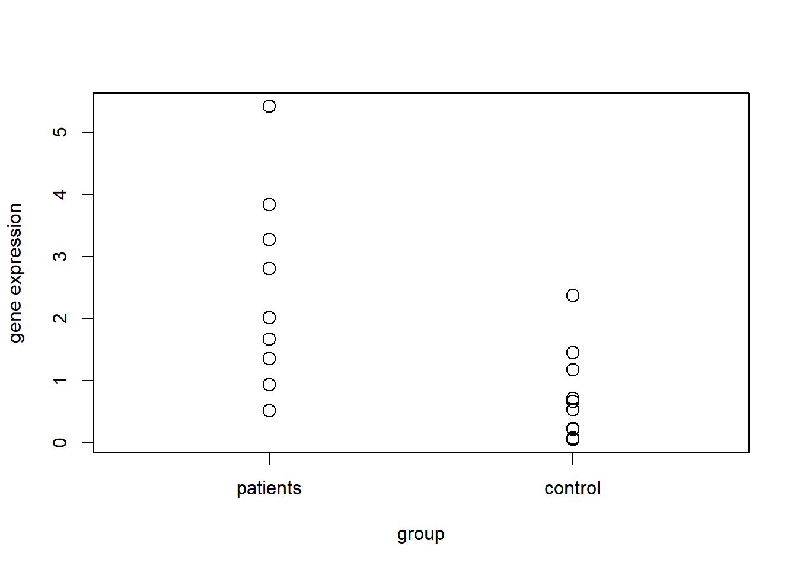

Hypothesis Tests: Non-normal
# student
# op_echo=FALSE
# op_eval=FALSE
# teacher
op_echo=TRUE
op_eval=TRUEInstall an R package
R packages are a collection of R functions, complied code and sample data. We install an R package through the function install.package(package_name). Let’s install the package medicaldata:
install.packages("medicaldata")To use this package in our session we need to load it. To accomplish this, we use the library() function:
library(medicaldata)## Warning: package 'medicaldata' was built under R version 4.0.5from this package we want to retrieve the polyps data frame, which contains the systolic blood pressure, the weight and the smoking status for a sample of 500 adults. We use the library() to add this data frame to variable in our current environment:
data(polyps)
str(polyps)
## 'data.frame': 22 obs. of 7 variables:
## $ participant_id: chr "001" "002" "003" "004" ...
## $ sex : Factor w/ 2 levels "female","male": 1 1 2 1 2 1 1 2 2 2 ...
## $ age : num 17 20 16 18 22 13 23 34 50 19 ...
## $ baseline : int 7 77 7 5 23 35 11 12 7 318 ...
## $ treatment : Factor w/ 2 levels "placebo","sulindac": 2 1 2 1 2 1 2 1 1 1 ...
## $ number3m : int 6 67 4 5 16 31 6 20 7 347 ...
## $ number12m : num NA 63 2 28 17 61 1 7 15 44 ...The database polyps contains the results of the randomized controlled trial of sulindac vs. placebo in the prevention of colonic polyps in FAP (Familial Adenomatous Polyposis). You can find more information here polyps.
Exercises
Exercise 5.1
Assume the expression of a particular gene is measures in blood samples of \(n=10\) patients with Parkinson’s disease and in \(n=10\) healthy controls.
Example data is drawn from exponential distributions as follows:
set.seed(1223)
n = 10
patients = rexp(n = n, rate = 1/2)
controls = rexp(n = n, rate = 1/1)complete = c(patients, controls)
group = c(rep(1, n), rep(2, n))
plot(group, complete, cex=1.5, xlim=c(0.5, 2.5), axes=FALSE, ylab="gene expression")
axis(1, c(1, 2), c("patients", "control"))
axis(2)
box()
ranked.values = rank(complete)
group = c(rep(1, n), rep(2, n))
plot(group, ranked.values, cex=1.5, xlim=c(0.5, 2.5), axes=FALSE, ylab="gene expression")
axis(1, c(1, 2), c("patients", "control"))
axis(2)
box()Use quantile-quantile plots to check for the assumption of normal distribution.
par(mfrow=c(1,2))
qqnorm(patients,main = 'patients')
qqline(patients)
qqnorm(controls,main='control',ylab=NA)
qqline(controls)Perform Mann-Whitney U test (Wilcoxon Rank Sum test, R function (wilcox.test). Conduct a t-test. Compare results from these two tests.
#Null hypothesis is that the distributions of x and y differ by a
#location shift of mu
wilcox.test(patients,controls)
##
## Wilcoxon rank sum exact test
##
## data: patients and controls
## W = 85, p-value = 0.006841
## alternative hypothesis: true location shift is not equal to 0
#Comparison with t-test result, null hypothesis equal means
t.test(patients, controls)
##
## Welch Two Sample t-test
##
## data: patients and controls
## t = 2.9504, df = 13.022, p-value = 0.01125
## alternative hypothesis: true difference in means is not equal to 0
## 95 percent confidence interval:
## 0.4205594 2.7192461
## sample estimates:
## mean of x mean of y
## 2.3166639 0.7467612Exercise 5.2
Compute the difference between number12m level and baseline level and add the data to the data frame.
polyps$change12m<-polyps$number12m-polyps$baselineCheck if the differences relative to the treatment=='placebo' are normally distributed and do the same for treatment=='sulindac'.
dp<-subset(polyps,treatment=='placebo')$change12m
ds<-subset(polyps,treatment=='sulindac')$change12m
#Shapiro-Wilk’s test
shapiro.test(dp)
##
## Shapiro-Wilk normality test
##
## data: dp
## W = 0.4912, p-value = 1.188e-06
shapiro.test(ds)
##
## Shapiro-Wilk normality test
##
## data: ds
## W = 0.48965, p-value = 4.83e-06
#QQplot
par(mfrow=c(1,2))
qqnorm(dp,main='placebo')
qqline(dp,col='red')
qqnorm(ds,main='sulindac',ylab=NA)
qqline(ds,col='red')Calculate the ranks of sample values. Plot the ranks of sample values.
ranked_values<-cbind(
c(rep(1,length(dp)),rep(2,length(ds))),
rank(c(dp,ds))
)
plot(ranked_values,cex=1.5, xlim=c(0.5, 2.5), axes=FALSE,
ylab="number of polyps",xlab = NA)
axis(1, c(1, 2), c("patients", "control"))
axis(2)
box()Perform Mann-Whitney U test, in this case you need to set correct=FALSE, because the continuity correction can not be applied as there are ties in our sample. Conduct a t-test. Compare results from these two tests.
wilcox.test(ds,dp,correct=FALSE)
t.test(ds,dp)##
## Wilcoxon rank sum test
##
## data: ds and dp
## W = 24, p-value = 0.05208
## alternative hypothesis: true location shift is not equal to 0
##
##
## Welch Two Sample t-test
##
## data: ds and dp
## t = -0.11864, df = 15.232, p-value = 0.9071
## alternative hypothesis: true difference in means is not equal to 0
## 95 percent confidence interval:
## -66.3924 59.3823
## sample estimates:
## mean of x mean of y
## -21.77778 -18.27273Interpret the results of the test, keeping in mid the analysis made before.
Exercise 5.3
Assume there are two different types of disease (type A and B). The mutation rate of a particular gene is \(p_1\) under type A and \(p_2\) under type B. To compare the mutation rates, tissue samples of \(n_A=50\) patients of disease type A and \(n_B=100\) patients of disease type B are studied.
Example data is drawn from binomial distributions. Look at the sample values of both patient groups (a value of 0 means no mutation, a value of 1 means there is a mutation).
n1 = 50
n2 = 100
p1 = 0.1
p2 = 0.15
typeA = rbinom(n = n1, prob = p1, size = 1)
typeB = rbinom(n = n2, prob = p2, size = 1)Mutation levels are summarized in a 2x2 cross tabulation:
mutation = c(typeA, typeB)
group = c(rep("type A", n1), rep("type B", n2))
X = table(mutation, group)
prop.table(X, 2)## group
## mutation type A type B
## 0 0.90 0.85
## 1 0.10 0.15Perform Fisher’s exact test to see whether mutation rates are significantly different between the two groups (fisher.test).
fisher.test(X)
## Odds ratio
odds_A=p1/(1-p1)
odds_B=p2/(1-p2)
OR=odds_B / odds_A
# Null hypothesis: OR equals to 1
# Null hypothesis : Disease type and mutation status are independent##
## Fisher's Exact Test for Count Data
##
## data: X
## p-value = 0.4558
## alternative hypothesis: true odds ratio is not equal to 1
## 95 percent confidence interval:
## 0.5047588 5.9364737
## sample estimates:
## odds ratio
## 1.583639Change samples sizes \(n_1\), \(n_2\) and mutations rates \(p_1\), \(p_2\). Discuss how results change.
n1 = 50
n2 = 100
p1 = 0.1
p2 = 0.5
typeA = rbinom(n = n1, prob = p1, size = 1)
typeB = rbinom(n = n2, prob = p2, size = 1)
mutation = c(typeA, typeB)
group = c(rep("type A", n1), rep("type B", n2))
X = table(mutation, group)
fisher.test(X)
##
## Fisher's Exact Test for Count Data
##
## data: X
## p-value = 8.101e-10
## alternative hypothesis: true odds ratio is not equal to 1
## 95 percent confidence interval:
## 5.125226 64.273949
## sample estimates:
## odds ratio
## 15.59446
odds_A=p1/(1-p1)
odds_B=p2/(1-p2)
odds_B / odds_A
## [1] 9